Eduardo Valderrama , teniente de alcalde , exclama : - Vamos al lío -.
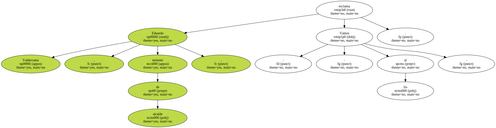El lío es la asamblea.
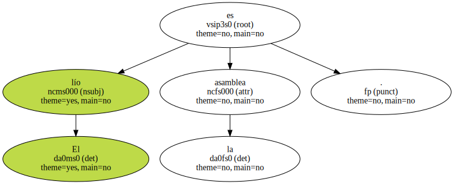Juan Manuel Sánchez Gordillo , el alcalde , está en Sevilla , en una cosa de Agricultura.
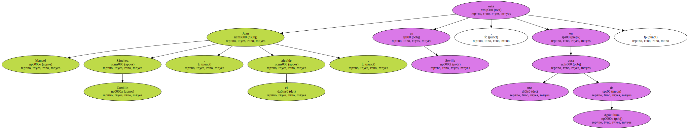- Bueno , pues que no hay ná , que está tó como ayer y anteayer.
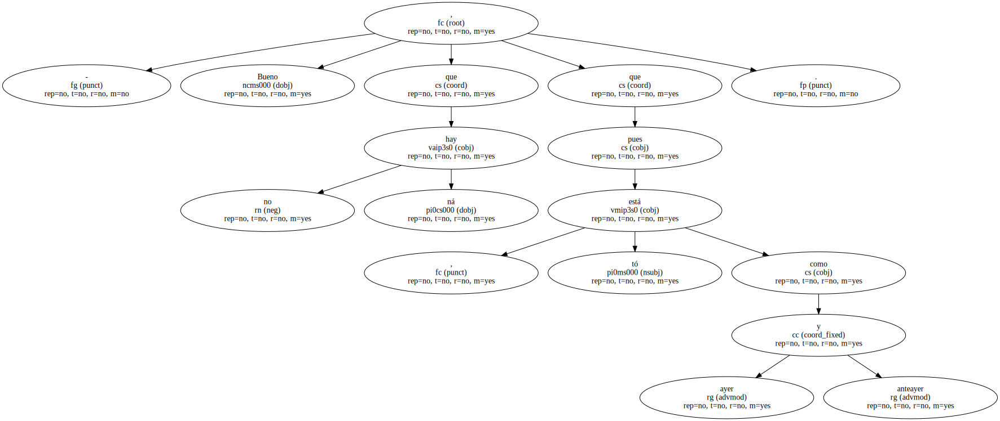Pero hay que comer y vamos a organizar el almuerzo -.

Mañana se producirá la entrevista decisiva con Amparo Rubiales , la delegada del Gobierno.
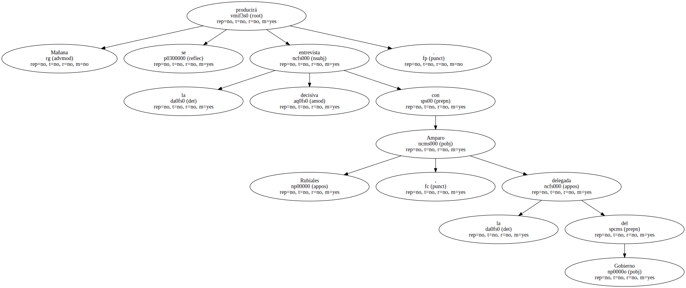Se sabrá entonces si hay o no huelga de hambre , otra vez , en Marinaleda.

Las hubo cuando la reforma agraria , cuando el PER , cuando qué sé yo , siempre que ha habido algo gordo , se ha ayunado voluntariamente en este pueblo.
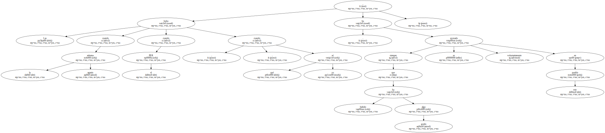- No nos cagamos en nadie , porque algún sacrificio hay que hacer - , decía una sindicona con la ironía del Sur.
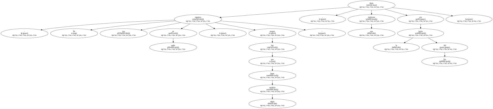- Pero Felipe nos está haciendo todas las putadas del mundo y más.
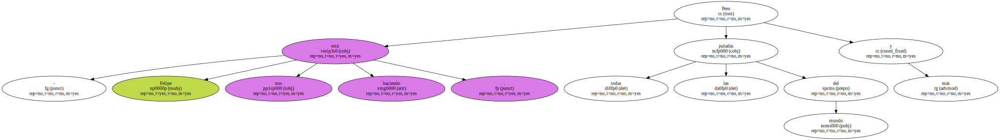¿ Aznar.
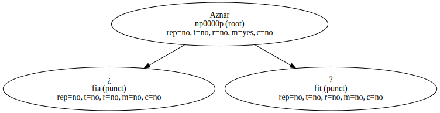¿ Más putadas que Felipe nos va a hacer.
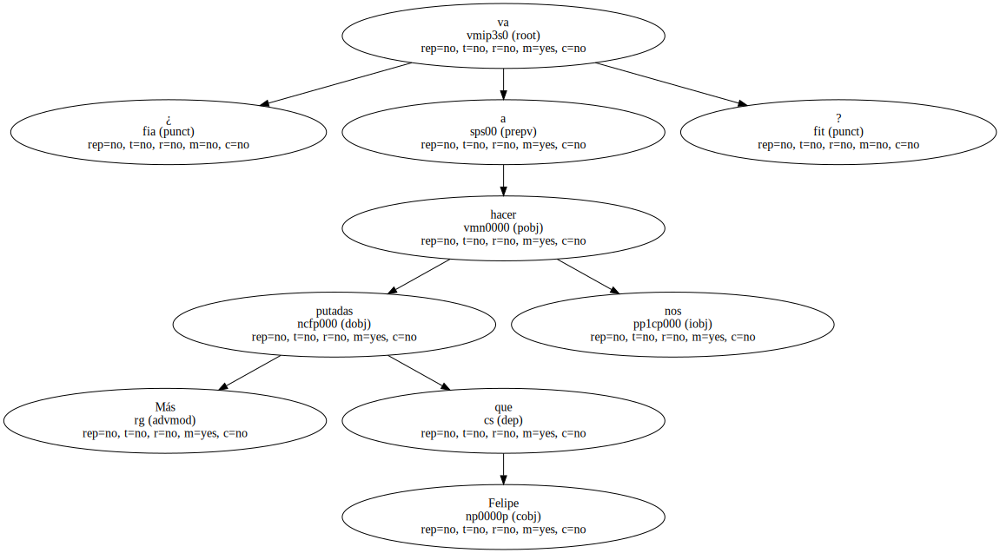Es imposible.
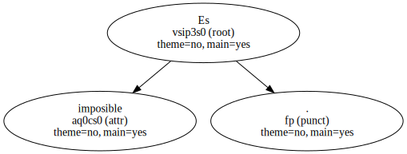No le va a dar lugar a superarlo - , bramaba cerca de la fuente de colores que no tienen en El Rubio , el pueblo de al lado.
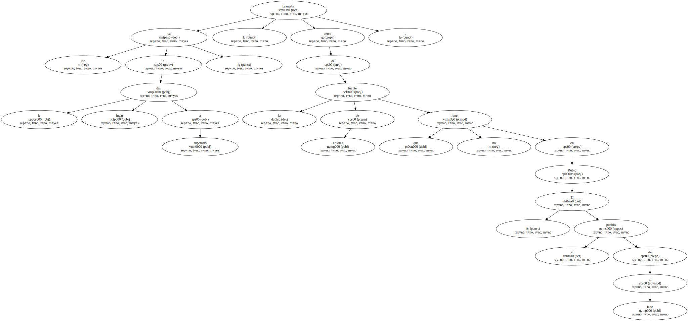Siempre han mandado para el PER 45 millones , como 7 u 8 - peonás - para cada parado.

- Con la reducción del 30 % , sólo cabremos a cuatro o cinco.
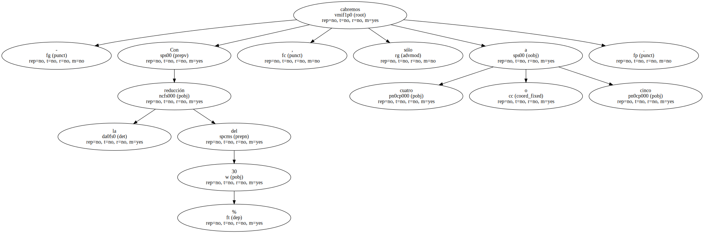Muchos no podrán tener este año las 60 peonás necesarias - , sentenciaba Eduardo , mientras las mujeres dejaban a los hombres discutiendo si se vuelve a las tres y media o a las cuatro.
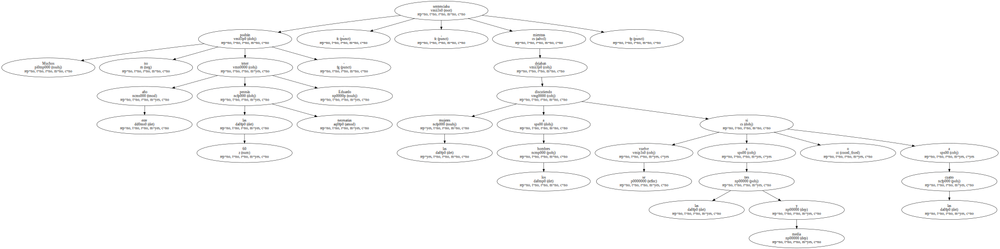Hoy se podía comer ; pues a comer , que mañana quién sabe.
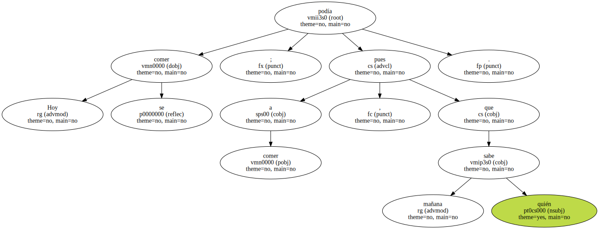